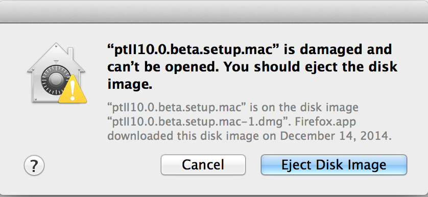

If you get a dialog like:

Then the problem is that your version of Mac OS X has a bug and needs to be reconfigured.
The bug is that the dialog should state that the dmg file is unsigned and ask you if you would like to change your settings. The file is not damaged. Read on to see how to work around this bug.
OS X: About Gatekeeper describes how to fix Gatekeeper to allow applications downloaded from anywhere.
The Ptolemy II installer is an unsigned application, so recent versions of Mac OS X may state that the application cannot be run.
If this happens, go to the System Preferences application, click on "Security and Privacy" and then allow execution of the application.
Ptolemy II requires Java, which may be downloaded from Oracle. We suggest installing the JDK, see http://www.oracle.com/technetwork/java/javase/downloads/index.html. Note that recent versions of Mac OS X may prompt you to install the JDK if it is not yet installed.
The Ptolemy installer for Mac will install a version of Ptolemy with a JRE that includes:
This page covers installing Ptolemy II via a traditional Windows Installer
Other formats include: